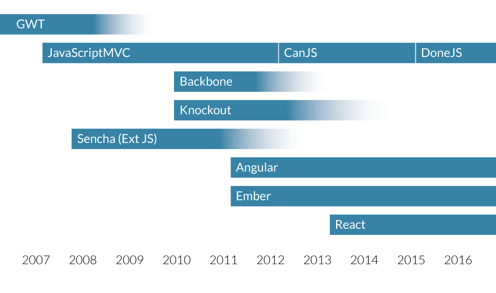

2000 - 2007: "Web 2.0"
JavaScript helper libraries:

Widget libraries:
JavaScript helper libraries:
Widget libraries:

A checklist of things we found help guide the development of a JavaScript software project:
Guide awkward but important conversations
After filling out the checklist in hindsight for all of our previous projects, we calculated influence factors and recorded the correlation to project success for each category.
Map parts of the route to application state properties (and vice versa).
const appState = {
page: 'home',
postId: null
};
route('/:page');
route('/:page/:postId', { page: 'posts' });
route.url({ page: 'posts', postId: 10 }); // /posts/10
route.url({ page: 'user', section: 'account' }); // /user?section=account
A functional testing library built on top of jQuery and runs on QUnit, Jasmine or Mocha:
test('TodoMVC app', function() {
F('#new-todo').click().type('Do some nerdy stuff\r');
F('#todo-list li').size(1, 'Got one Todo');
F('#todo-list li:first label')
.html('Do some nerdy stuff', 'Todo has correct text');
F('#todo-count').html(/<strong>1<\/strong>(.*)item(.*)left/,
'Todo count text is correct');
});Automate it with any test QUnit, Jasmine or Mocha test runner (example page).